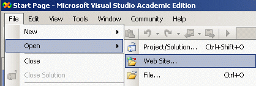
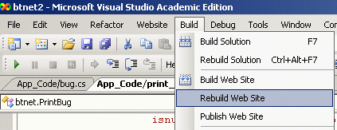

The file "insert_bug.aspx" actually serves as the API for inserting new bugs and appending posts to existing bugs. Insert_bug.aspx is what's used by the BugTracker.NET screen capture utility and btnet_service.exe. Any program that can send an HTTP request can use the API.
To use it, send an HTTP request with a URL like so (ignore the line breaks):
insert_bug.aspx?username=YOURUSERNAME
&password=YOURPASSWORD
&short_desc=YOUR+SHORT_DESC
&comment=YOUR+COMMENT&projectid=YOUR_PJID
The response will either be ERROR: followed by the specifics of the error or OK: followed by the bug id.
To add a comment to an existing bug, format a URL like the following:
insert_bug.aspx?username=YOURUSERNAME
&password=YOURPASSWORD
&bugid=9999&comment=YOUR+COMMENT
You can experiment with these URLs by typing them directly into your browser's address bar.
HTTP "GET" requests, where the payload is in the URL, have a size limit, so for larger requests, format a POST.
For the GET query string or POST form variables, the variable names are:
-
username
password
bugid
short_desc
comment
projectid - the integer id of the project)
-
attachment - a base64 encoded version of the file to be attached. Typically, an image.
attachment_content_type - for example "image/jpeg"
attachment_filename - for example, "screenshot.jpg"
attachment_desc
See the insert_bug.aspx itself for more complete and up-to-date info. Don't just trust this documentation.
Neither the screen capture nor btnet_service.exe can use IIS's Windows security, but there's a workaround if you use Windows security: You can change the website so that insert_bug.aspx ONLY is configured not to use windows security. That is, you can set the security at the level of a page, not just at the level of a virtual directory.
Customizing BugTracker.NET with C# code [back to contents]
You have the source code to BugTracker.NET, so you can edit that source code however you want. But editing the BugTracker.NET source code might make it harder for you to upgrade to new and improved versions of BugTracker.NET.
The file App_Code\Workflow.cs is an isolated place where you can centralize your customizations so that when you upgrade, you don't lose them. The page edit_bug.aspx calls custom_adjust_controls() before a page is displayed to give you a chance to modify the controls on the page. For example, you could limit the list of statuses a particular user is allowed to select. Later, edit_bug.aspx calls custom_validations() to give you a chance to add your own validation logic and error messages.
There is sample code in the file itself that you can use to get started.
The only tool you need to make changes to most of BugTracker.NET is a text editor. I personally recommend the Community Edition of Visual Studio. Use the "Open Website" command.
There are some major parts of BugTracker.NET that I didn't write:
- Parsing of incoming email uses SharpMimeTools.dll, built from the files in
the SharpMime folder.
SharpMimeTools is another open source project, created by Angel Marin. More info at http://anmar.eu.org/projects/sharpmimetools
- Editing with fonts and colors uses CKEditor.
- The full text uses Lucene.NET.
Using Visual Studio [back to contents]
Where is the solution/.sln file? You don't need one. You can work with the code with any text editor.
For the best experience working with BugTracker.NET in Visual Studio, open and build it as a "Web Site".


Code Style [back to contents]
If you work with the code, you'll notice it's not written in an MVC style, nor even the earlier "code-behind" style.
I started BugTracker.NET in 2002 as a learning project, to teach myself .NET and C#, to get those technologies on my resume. At the time I didn't own Visual Studio, so I went about learning .NET the same way I had learned Java in its early days: I downloaded the SDK, edited files using a text editor, and compiled using the command line.